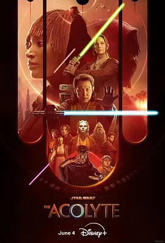

5.6
星球大战：侍者
The Acolyte
2024
美国
评分 5.6
导演:
莱丝利·海德兰德
演员:
阿曼德拉·斯坦伯格 / 李政宰 / 查理·巴奈特 / 达芙妮·基恩 / 瑞贝卡·亨德森
类型:
悬疑,惊悚,科幻
剧情简介
故事发生在至高共和国时代的尾声，表面上秩序井然，暗地里却潜伏着逐渐成形的黑暗势力。绝地大师索尔在调查一宗神秘刺杀案时发现多位绝地相继遇害，这些事件之间隐约存在关联，却始终难以捉摸。为了追查真相，他不得不与昔日徒弟奥莎再度同行。奥莎早已离开绝地体系，多年来与阴影并行，她的犹疑与内疚在行动中不断浮现，为调查增添复杂情绪。二人随着线索深入各个星域，荒废的前哨站、潮湿阴冷的遗迹、被封锁的档案库，都暗示着某股力量正攫取失衡的机会。旅途中，索尔稳重而谨慎的态度与奥莎的敏锐直觉形成互补，也让他们在不断逼近真相时感受到更强烈的危机。暗处的袭击者行动迅速而精准，似乎对绝地武士的弱点了如指掌。每一次交锋都让他们意识到敌人的目的远非制造混乱那么简单，背后有更深的谋划正在收紧包围。奥莎在面对过去时愈发动摇，而索尔也不得不审视绝地体系正逐渐显现的裂痕。随着调查推进，他们踏入一片被黑暗笼罩的漩涡。疑点不断累积，善恶界限被模糊，昔日信仰开始受到前所未有的考验。在不断逼近的压迫感中，这段追查不再只是寻找凶手，更是一场直面权力、恐惧与内心阴影的旅程。